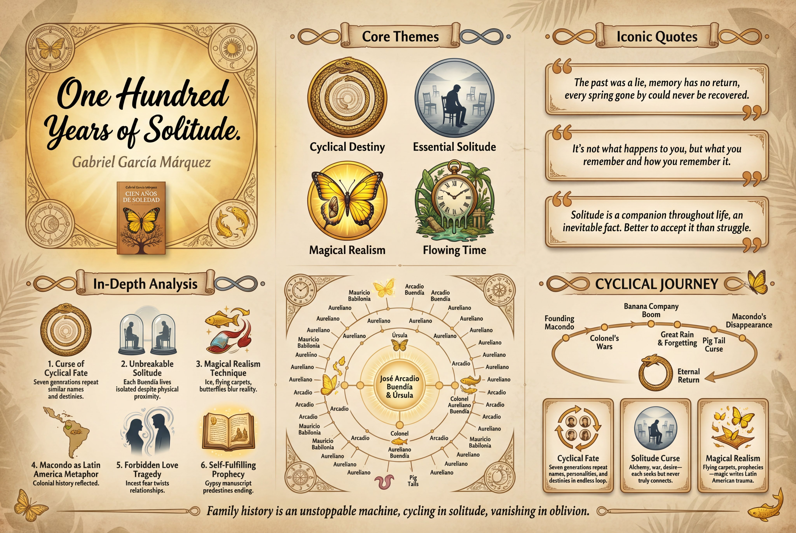
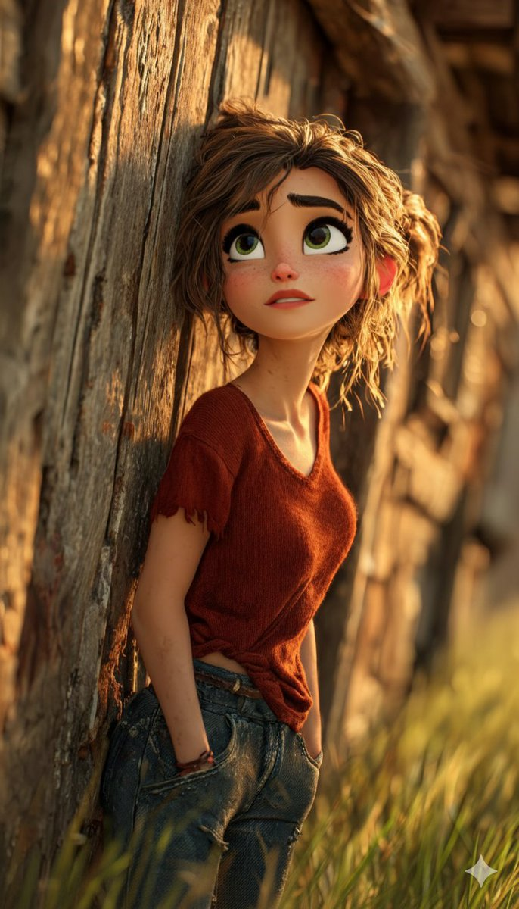
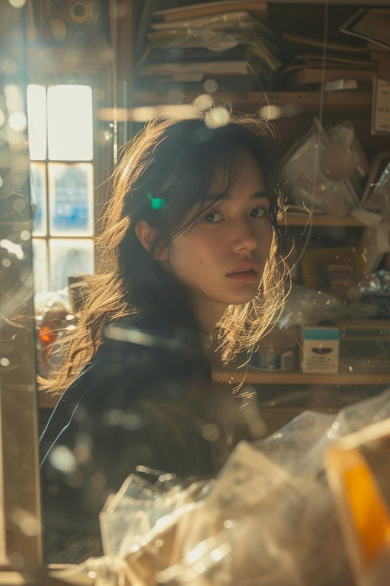
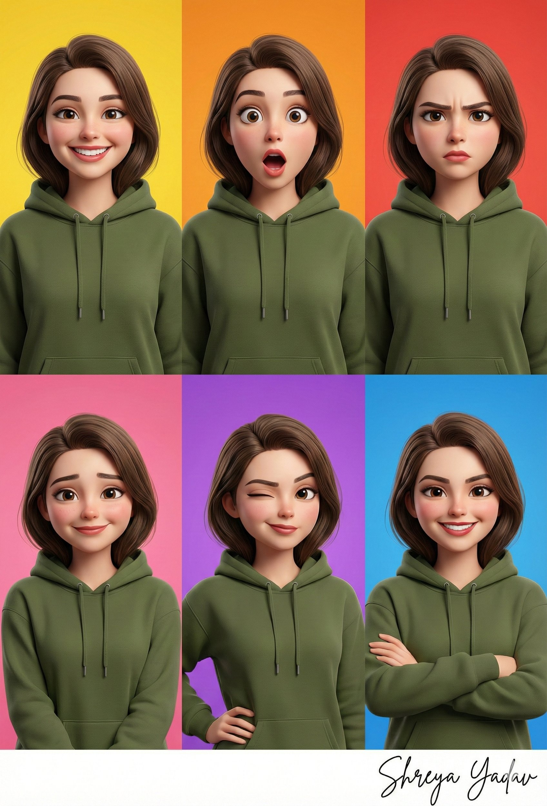
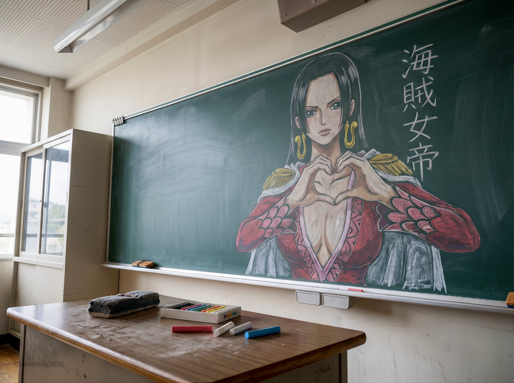
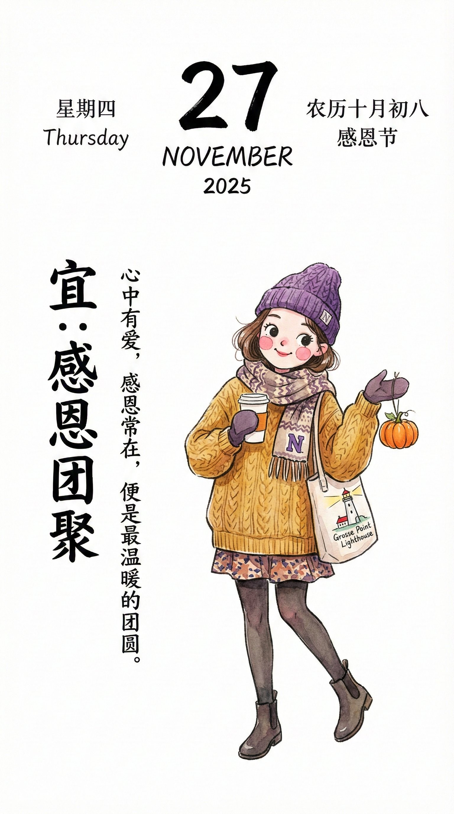
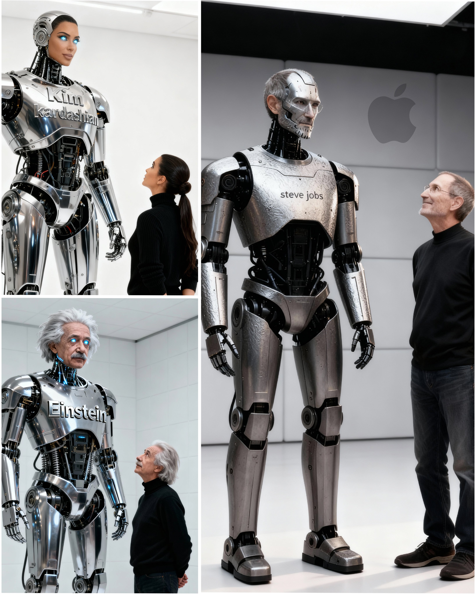
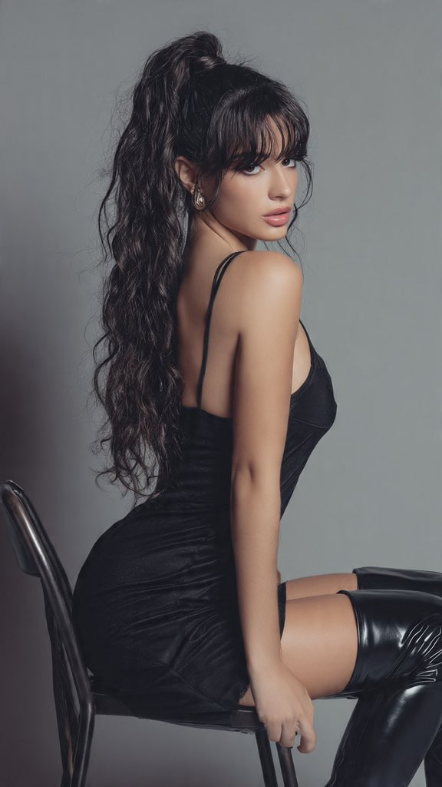

数字艺术
精选 29 个相关案例

案例588: 超写实火水元素平衡电影肖像生成指南與要点
描述一个面向镜头、左为火、右为水的对称超写实肖像，强调暖橙与冷蓝的强烈对比，以及电影级灯光、质感与超细纹理。
🎨 查看AI提示词
🇨🇳 中文提示词
{ "目标": "创作一幅超写实的电影肖像，表达火与水之间史诗般的平衡", "人物细节": { "主题": { "类型": "年轻女性", "姿态": "面向前方，位于画面中央", "表情": "平静、专注、有力" "凝视": "与相机直接对视", "头发": { "发型": "湿发，向后梳拢", "细节": { "FireSide...
🇬🇧 English Prompt
Gemini Nano Banana pro image generation Prompt:{ "Objective": "Create a hyper-realistic cinematic portrait expressing an epic balance between fire and water", "PersonaDetails": { "Subject...
案例578: Ultra-Realistic NYC Floating Island
Ultra-high-detail poster of a floating NYC island among clouds, with cinematic lighting.
🎨 查看AI提示词
🇨🇳 中文提示词
超逼真宣传 创作一张超高清、超逼真的数字海报，描绘一个漂浮的微型岛屿，形状像[纽约]，静静地坐落在天上的白云之上。融合标志性地标、自然风光（如森林、山脉或海滩），以及[美国]独有的文化元素。使用大号白色 3D 字母将“[美国]”雕刻在陆地上。添加艺术细节，如鸟类（[美国]本土物种）、电影般的灯光、鲜艳的色彩、空中透视和阳光反射，以增强真实感。超高质量，4K+分辨率。1080x1080 格式..
🇬🇧 English Prompt
Ultra-Realistic Promotional Create an ultra-HD, hyper-realistic digital poster of a floating miniature island shaped like [NEW YORK], resting on white clouds in the sky. Blend iconic landmarks, natur...

案例575: 竖版中式复古教育信息图海报设计：一键封装开箱即用
该推文描述一张竖版、传统中国复古风格的教育信息图海报的设计规范，包含核心主题、经典语录、核心观点六项内容、关系图谱、时间线与人物卡等模块，强调统一字体、留白比例、高分辨率输出与竖横双向适配，适合大幅面展示与展览使用。
🎨 查看AI提示词
🇨🇳 中文提示词
一张高质量的竖版教育信息图海报，采用传统的中国复古风格，由[作者/创作者]为[主题/书籍标题]设计。 【版本 5.0 - 最终稳定版，中文文本清晰度已得到验证】 背景： - 径向渐变背景营造出微妙的暗角效果，中心较亮，边缘逐渐变暗。 - 纹理纸表面，可见天然纤维图案，营造出真实的复古感 画布上散布着细微的岁月痕迹。 - [可选：主题的具体纹理说明] 头部区域（顶部区域）： - 顶部...
🇬🇧 English Prompt
Prompt:Prompt: A high-quality vertical educational infographic poster in a traditional Chinese retro style, designed for [TOPIC/BOOK TITLE] by [AUTHOR/CREATOR]. [VERSION 5.0 - FINAL STABLE EDITION W...

案例573: 8K镜像自拍：K-Pop偶像风格的高饱和活力后台场景
提供一份8K镜像自拍的生成提示，塑造韩国风格K-Pop偶像在后台更衣室的高饱和造型。通过柔和高调灯光、环灯光效与动态构图，突出面部与服装细节及俏皮眼神。
🎨 查看AI提示词
🇨🇳 中文提示词
版本： 2.0， "格式": "镜像自拍肖像", "target_resolution": "8K UHD", "style_preset": "K-Pop 偶像美学/Y2K 多彩风格" }, "subject_profile": { "生物识别"：{ “种族”: “韩国人” “体型”：“纤细、健美、匀称的韩国流行偶像身材”， "facial_id": "可爱性感，小脸，娃娃...
🇬🇧 English Prompt
{ "configuration": { "version": "2.0", "format": "Mirror-Selfie Portrait", "target_resolution": "8K UHD", "style_preset": "K-Pop Idol Aesthetic / Y2K Colorful" }, "subject...

案例570: 极致冰镇可乐液体飞溅定格：高端商业摄影级水花瞬间
本推文描绘一只成人手握透明玻璃杯，冰镇可乐在高速拍摄下瞬间爆裂飞溅，强调真实水花、湿润质感和强烈对比，打造高端商业广告风格的强劲可乐视觉。
🎨 查看AI提示词
🇨🇳 中文提示词
{ “主题”： { “描述”：“一只人手紧握着一个装满冰镇碳酸可乐的透明玻璃杯，画面定格在液体飞溅的瞬间。” “年龄”: “成人” “表达”： { “总体而言”：“不可见” }, “脸”： { "preserve_original": true, “化妆”： “无” } }, “头发”： { “颜色”： “不可见”， "样式": "不可见", “效...
🇬🇧 English Prompt
"subject": { "description": "A human hand gripping a transparent glass filled with ice-cold carbonated cola, frozen at the moment of an explosive liquid splash", "age": "adult", "expres...
案例566: 边走边聊享受周末，探索AI与3D数字艺术的魅力
推文分享了边走边听声音的放松方式，并展示了两款梦幻般的3D数字角色，结合AI渲染技术，呈现出细腻高清的动画风格，激发创意灵感。
🎨 查看AI提示词
🇨🇳 中文提示词
1. 一位年轻女性的可爱时尚 3D 数字角色，她拥有白皙柔嫩的肌肤和红润的脸颊，对着镜头俏皮地眨着眼。她有着一双明亮的大眼睛，琥珀色的眼眸中点缀着金色的眼圈，长长的睫毛，以及一丝温柔的微笑。她一头草莓金色的卷发高高盘起，蓬松的发髻中散落着几缕碎发，头上戴着白色头戴式耳机和粉色太阳镜。她身穿一件舒适的粉色针织开衫，内搭一件奶油色的露脐上衣，下身是一条浅米色休闲短裤，裤脚系着一个粉色小蝴蝶结。画面采用...
🇬🇧 English Prompt
Chatgpt ai image promptChatgpt ai 1.A cute, stylized 3D digital character of a young woman with soft fair skin and rosy cheeks, winking playfully at the camera. She has large expressive amber eyes ...

案例565: 高品质3D动画幻灯片与肖像创作展示
本推文介绍了由Google Gemini Nano Banana AI生成的高分辨率3D动画幻灯片与肖像，包括细腻的角色细节、光影效果和丰富的纹理，展现了先进的数字艺术与动画技术应用。
🎨 查看AI提示词
🇨🇳 中文提示词
1. 这是一幅高质量的 3D 数字动画风格插画，描绘了一位年轻女子，她有着一双碧绿的大眼睛和一头略显凌乱、被阳光亲吻过的棕色头发。她神情温柔而沉思，鼻梁上点缀着淡淡的雀斑。她身穿一件质朴的赤陶色短袖衬衫和一条做旧的蓝色牛仔裤。 布景和灯光： 她倚靠在一堵古朴斑驳的木栅栏或谷仓墙上，栅栏或谷仓的墙壁由竖直的木板组成。傍晚时分，阳光温暖而灿烂，洒在她头发周围，形成柔和的轮廓光。背景中是模糊的绿草（...
🇬🇧 English Prompt
Making some 3D animated slides. 制作一些 3D 动画幻灯片。 By Google Gemini Nano Banana ai. Prompt由 Google Gemini Nano Banana ai 提供。提示 1. A high-quality 3D digital animation style illustration of a young woma...

案例563: 复古技术插图：谷歌 Gemini Nano Banana pro 3.0 工具展示
本图为谷歌 Gemini Nano Banana pro 3.0 的复古技术插图，描绘一只戴手套的手握黄铜绘图圆规和老式钢笔，背景为房屋建筑蓝图及机械元素，展现传统制图与现代技术的结合。
🎨 查看AI提示词
🇨🇳 中文提示词
{ “main_focus”: “一只戴着手套的手拿着一个黄铜绘图圆规和一支老式钢笔” “背景元素”：[ “房屋的建筑蓝图” “机械的
🇬🇧 English Prompt
Vintage Technical illustration by Google Gemini Nano Banana pro 3.0 Prompt { "subject": { "main_focus": "A gloved hand holding a brass drafting compass and a vintage fountain pen", ...

案例562: Nano Banana Pro在Gemini应用中的精彩呈现
推文介绍了在Gemini应用中使用Nano Banana Pro创建的肖像作品，描绘了一位年轻东亚女性侧身回眸，展现细腻的视觉效果和创意设计。
🎨 查看AI提示词
🇨🇳 中文提示词
“主题”： { 描述：一位年轻的东亚女性，侧身站立，转身看向观众。 “姿势”：“回头看，头部微微倾斜，身体侧向镜头。” “表情”：柔和、中性
🇬🇧 English Prompt
Nano Banana Pro on Gemini app. Prompt: { "subject": { "description": "Young East Asian woman, positioned in profile turning to look back at the viewer.", "pose": "Looking over shoulder, ...

案例560: 极端视角下的可爱动物碗内摄影艺术
这是一张采用极端内视角拍摄的广告照片，镜头置于深碗底部，广角镜头捕捉到一只可爱动物探入碗中，鼻子特写且透视夸张，眼神灵动，画面明亮清晰，展现出极致的萌态与欢乐氛围。
🎨 查看AI提示词
🇨🇳 中文提示词
广告照片，采用极端视角，从深碗内部拍摄。相机放置在碗底，镜头向上。碗的内壁呈弧形环绕，从各个方向框住画面，碗的圆形边缘清晰可见，仿佛通向天空。一只极其可爱的小动物将头完全探入碗中，直视镜头。它的鼻子离镜头非常近，由于广角镜头的透视效果略微变形，看起来像是在嗅闻镜头。它的眼睛又大又灵动，与观众进行着眼神交流。广角镜头，f/1.4 光圈，极浅的景深，强烈的透视变形和透视缩短效果，夸张的鼻子尺寸，柔和明...
🇬🇧 English Prompt
Prompt Studio: Cuteness Overload Advertising photo, extreme POV from inside a deep food bowl. The camera is physically placed at the very bottom inside the bowl, facing upward. The interior walls o...

案例559: 龙的解剖结构爆炸图：奇幻写实与达芬奇风格融合
这幅高分辨率龙的解剖爆炸图细致展示了翅膀、鳞片、喷火腺和骨骼等部位，采用金属光泽鳞片与晶莹骨骼，背景为古羊皮纸配烟雾与火炬光影，辅以优雅注释，灵感源自达芬奇草图，结合现代数字艺术技术创作。
🎨 查看AI提示词
🇨🇳 中文提示词
创作一幅龙的解剖结构爆炸图，将龙的翅膀、鳞片、喷火腺和骨骼结构分解成带有标签和连接箭头的各个组成部分。每个部分都以精细的细节呈现，展现出金属光泽的鳞片、闪耀的脉络和晶莹剔透的骨骼。背景为古老的羊皮纸，并配以微妙的烟雾效果和温暖的火炬光影。使用优雅的草书字体添加说明性注释。横幅蓝图式海报，奇幻写实风格，高分辨率，灵感源自达芬奇的草图，并融入现代数字技术。
🇬🇧 English Prompt
Prompt : Create an exploded-view illustration of a dragon's anatomy, dissecting its wings, scales, fire-breathing glands, and skeletal structure into labeled components with connecting arrows. Each p...

案例558: 用Gemini Nano Banana Pro打造极致写实圣诞女郎造型
本次作品利用Gemini Nano Banana Pro工具，生成一位穿着圣诞老人主题服装的女性形象，细节极为写实，呈现温暖梦幻的节日氛围。整体风格融合专业影棚摄影质感与柔和电影灯光，打造出浓郁且富有诱惑力的圣诞节视觉效果。
🎨 查看AI提示词
🇨🇳 中文提示词
{ "任务": "图像生成", "reference_image": "use_uploaded_reference_image", "identity_constraints": { "face_identity": "与参考图像 100%完全匹配", "no_facial_changes": true, "no_body_proportion_changes": true }, ...
🇬🇧 English Prompt
Try this Christmas Look using Gemini Nano Banana Pro 试试用 Gemini Nano Banana Pro 打造这款圣诞造型 { "task": "image_generation", "reference_image": "use_uploaded_reference_image", "identity_constrain...

案例557: Nano banana Pro助力打造复古颓废风高角度艺术写真
使用Nano banana Pro成功生成一幅高角度鸟瞰视角的东亚女偶像形象，展现其倒挂姿势和丰富纹身细节。画面采用90年代复古棕褐色调，背景为凌乱的黄色衣橱，传递疲惫而浪漫的颓废摇滚美学。
🎨 查看AI提示词
🇨🇳 中文提示词
reference_image": "image_0.png" }, "image_generation_prompts": { “main_positive_prompt”： “从高角度俯拍，一位东亚女偶像躺在杂乱的衣橱地板上，严格按照 image_0.png 中所示的倒立姿势和人体结构摆放。她身穿一件深蓝色蕾丝迷你连衣裙，上身是挤奶女工式的紧身胸衣，领口为心形，袖子是短袖，裙摆呈荷叶...
🇬🇧 English Prompt
"reference_image": "image_0.png" }, "image_generation_prompts": { "main_positive_prompt": "High-angle bird's-eye view shot of a female east Asian idol subject lying on the floor of a clutt...

案例556: 一脸六情：AI绘制六态女性拼贴艺术作品欣赏
这篇推文介绍了使用Google Gemini ai Nano Banana 3 Pro工具，创作出一幅六格拼贴的3D漫画风格女性肖像，展现六种不同情绪，包括快乐、惊讶、严肃、可爱、俏皮和自信，融合高端数字艺术与丰富色彩。
🎨 查看AI提示词
🇨🇳 中文提示词
project_name": "3D_Caricature_Collage_Olive_Green", "prompt_structure": { “主题”： { "type": "Woman", “风格”：“3D 漫画”， “外观”：“高度抛光，干净，细节一丝不苟”， 服装：深橄榄绿连帽衫（浓郁、柔和的大地色调） }, “作品”： { “类型”：“拼贴画”， "布局": "六...
🇬🇧 English Prompt
One face, six moods. Which vibe are you claiming today?Google Gemini ai Nano Banana 3 Pro Prompt { "project_name": "3D_Caricature_Collage_Olive_Green", "prompt_structure": { "subjec...

案例554: 黑板粉笔画艺术：展现《海贼王》波雅·汉库克的细腻再现
这篇推文详细描述了在日本学校教室中，用粉笔绘制的《海贼王》角色波雅·汉库克的写实黑板画，捕捉了作品的纹理细节与环境氛围，展现了粉笔艺术的瞬间美感。
🎨 查看AI提示词
🇨🇳 中文提示词
{ “意图”：“以照片写实的手法记录一幅特定的黑板艺术作品，作品中描绘了一个动漫角色，捕捉了课堂环境中这种媒介的转瞬即逝的特性。” “框架”： { "aspect_ratio": "4:3", “构图”：“以黑板壁画为中心拍摄的中景镜头。画面前景中包含教师的办公桌以显示比例，而单个人物的画作则占据了背景空间。” "style_mode": "纪实写实主义，注重纹理，环境自然主义" },...
🇬🇧 English Prompt
{ "intent": "Photorealistic documentation of a specific chalkboard art piece featuring a single anime character, capturing the ephemeral nature of the medium within a classroom context.", "frame...

案例552: 创意手绘竖版日历插图设计指南与元素解析
本文详解一款清新明亮的手绘风格竖版日历插图设计，包括人物角色、季节元素、节日特色及本地化细节的创作要求，适合设计师参考。
🎨 查看AI提示词
🇨🇳 中文提示词
（可选：请在底部添加您的城市/语言/日期）
🇬🇧 English Prompt
nana banana pro Prompt(optional: add your city/language/date at the bottom)----Please create a cute, stylish calendar illustration in a vertical (9:16) layout featuring a fresh, bright, hand-drawn sty...

案例551: 古今融合：唐代贵妇与现代吹风机的幽默画作
这幅工笔风格的中国传统水墨彩画融合古典与现代元素，描绘唐代贵妇使用现代吹风机，身边黄人仆从各司其职，展现幽默的时代错置和创意融合。
🎨 查看AI提示词
🇨🇳 中文提示词
这是一幅工笔风格的中国传统水墨彩画，绘制在古旧的宣纸上。画中一位身着华丽唐代汉服的贵妇坐在木凳上，手持现代吹风机吹干她飘逸的长发。她穿着黑色丝袜，一只脚踩着红色高跟鞋，倚靠在小凳上。 三个身着古代中国仆人服、头戴礼帽的小黄人侍奉着她：左边一个看起来很紧张，手里拿着吹风机的电源线；中间一个跪在地上，用布擦拭她的红皮鞋；右边一个举着智能手机，帮她拍照。背景是古老的苍劲松树、竹林和太湖岩石。 ...
🇬🇧 English Prompt
A traditional Chinese ink and color painting in Gongbi style on aged rice paper texture. A noblewoman in elaborate Tang Dynasty Hanfu robes sits on a wooden stool, holding a modern hairdryer to dry he...

案例550: Nano Banana Pro创作“萝莲 Maiden”壁画，细节逼真如梦似幻
这幅由Nano Banana Pro创作的“萝莲 Maiden”壁画融合中式韵味和细腻的摄影质感，展现一位面容娇美的洋娃娃般女子，背景繁花似锦，场景如梦似幻，彰显其高超的数字艺术技巧。
🎨 查看AI提示词
🇨🇳 中文提示词
一幅超高清晰度、摄影质感极强的街头壁画，画面呈现强烈的中国风韵味。 画中描绘着一位绝美的卡通风女子正面特写头像，她神态柔美而宁静。墙体顶部被一大片盛开的蔷薇花覆盖，茂密的绿叶与繁盛的花朵向外舒展，部分枝条从墙顶垂落而下，与女子的头发巧妙融合，使她的秀发宛如由层层叠叠的蔷薇花组成。这些繁密的花朵簇拥着女子的头部，形成了一顶瑰丽的花冠，视觉效果华美浪漫。 背景中蓝天澄澈，点缀着朵朵白云；地...
🇬🇧 English Prompt
A street mural with ultra-high definition and an extremely strong photographic texture, the picture presenting a strong Chinese style charm. The painting depicts a close-up portrait of an exquisite...

案例549: 与狗狗一起在悬崖边飞无人机的奇妙体验
想象一下，你和你的狗狗在悬崖边操控无人机，享受壮丽的自然风光。通过Gemini应用程序，你可以生成一幅超逼真的无人机航拍图像，捕捉这一刻的美好。只需简单几步，便可创建属于你自己的精致风景画面！
🎨 查看AI提示词
🇨🇳 中文提示词
生成一张超逼真的无人机航拍风景图，画面中一名男子（附图为参考照片，请 100%还原参考照片中的人物面部，拍摄全身照，无人机距离该男子十英尺）坐在悬崖边的岩架上。他身穿印有“NANO BANANA”（纳米香蕉）字样的黑色 T 恤、修身破洞牛仔裤，戴着橙色镜片的 Oakley 太阳镜。他双腿悬空于岩架边缘，神情平静地直视无人机，手中握着遥控器。他的英国斗牛犬坐在他身旁。无人机镜头还捕捉到了周围令人惊叹...
🇬🇧 English Prompt
2. Click create image and upload your photo 3. Copy and Paste the prompt below on "Describe your image" section 4. Click Generate button Generate a hyper-realistic landscape image o...

案例545: 纳米香蕉效果震撼！探索AI创意新边界
这篇推文介绍了纳米香蕉的惊人表现，结合ALT提示展现了AI在数字艺术和创意领域的强大潜力。让人期待未来更多创新应用。
🎨 查看AI提示词
🇨🇳 中文提示词
创作一幅超写实、超清晰、全彩的大幅图像，展现不同时代的众多名人齐聚一堂，共同呈现在一张宽广的电影式画面中。图像必须如同完美拍摄的时尚杂志封面，拥有无可挑剔的光线、栩栩如生的肌肤纹理，以及头发、毛孔、反光和织物纤维等细微之处。整体风格与氛围 照片级真实感，8K 分辨率，浅景深，柔和自然补光+强烈的金色边缘光 高动态范围，校准色彩分级 肤色完美准确 清晰的织物细节，可见每一根线...
🇬🇧 English Prompt
Create a hyper-realistic, ultra-sharp, full-color large-format image featuring a massive group of celebrities from different eras, all standing together in a single wide cinematic frame. The image mus...

案例538: 使用 Gemini Nano Banana 创作个性自画像的创新体验
这篇推文介绍了如何利用 Gemini Nano Banana 工具，为自己创作独特的自画像。通过提示引导，激发创意，实现数字艺术的个性表达，适合艺术爱好者和创意设计师尝试。
🎨 查看AI提示词
🇨🇳 中文提示词
一张专业的、电影感的照片（非数字艺术或绘画）捕捉了一位面容与上传参考图相同的美女，艺术家正在画架上绘制自己的写实自画像。她将一支细画笔靠近脸颊，站在画布前，画布上有一个充满活力的水彩泼溅背景。她拥有一头长卷曲的棕色头发，上面点缀着微妙的鲜花装饰。她穿着一件紧身、低领、褶边白色农家女上衣，略微露出胸部。拍摄于一个暖光、木质的摄影棚环境中。构图聚焦，景深深远，自然皮肤纹理，胶片颗粒感，超精细，8k，照...
🇬🇧 English Prompt
A professional, cinematic photograph (not digital art or painting) captures a beautiful young woman with the same facial features as the uploaded reference,artist painting her own realistic self-portr...

案例535: 雨夜中的超写实蜘蛛侠与女性亲密瞬间
这组超写实风格的图像展现了在雨夜城市中，蜘蛛侠倒挂与一位湿润的女性亲密互动的场景，细节丰富，光影戏剧化，呈现出极致的摄影质感。
🎨 查看AI提示词
🇨🇳 中文提示词
"类型": "图像生成", "风格": "超写实照片", "艺术风格": [ "照片级真实感", "HDR 色调平衡", "奢华写实" ], "主题": [ { "description": "女人", "参考图像": "用户提供的照片", "面部特征": "不要修改", "外貌": { ...
🇬🇧 English Prompt
"type": "image_generation", "style": "hyper-realistic photograph", "artistic_style": [ "photorealism", "HDR tone balance", "luxury realism" ], "subjects": [ ...

案例532: 双重曝光艺术：现代人与自然的对比之美
这幅由Grok Imagine创作的双重曝光艺术将艺伎轮廓与城市与自然景观融合，展现现代人类在城市与自然之间的双重存在，充满视觉冲击与哲理思考。
🎨 查看AI提示词
🇨🇳 中文提示词
一位艺伎被描绘在双重曝光技术中，其中一半的轮廓包含几何黑色城市景观元素，而另一半则揭示出野性的粉色自然景观，代表着现代人类的双重存在。
🇬🇧 English Prompt
A geisha portrayed in a Double Exposure technique where half the silhouette contains geometric black cityscape elements while the other half reveals wild pink natural landscapes, representing the dual...

案例531: 超现实越南女性白莲肖像，静谧优雅的艺术表达
这是一幅8K超真实肖像，描绘一位身穿传统丝绸服饰的越南年轻女性，手持白莲花，神态宁静梦幻。背景采用渐变橄榄绿，细节精致，表现出极高的艺术品质。
🎨 查看AI提示词
🇨🇳 中文提示词
创建上传人物的超逼真面部（保留精确的真实面部和身体身份，不进行任何改动）8K 高分辨率超现实肖像，描绘一位年轻、优雅的越南女性，她身穿传统的白色丝绸 yếm，搭配一条长长的飘逸暗绿色裙子。她略微倾斜坐着，右手拿着一朵新鲜的白莲花靠近右脸颊，肘部优雅弯曲。左手轻轻放在大腿上。她的头略微朝向莲花，眼睛凝视着花朵，带着宁静、梦幻般的神情和精致的笑容。她的黑发梳成高高的波浪发髻，几缕发丝围绕着她白皙、容光...
🇬🇧 English Prompt
1. Open Gemini Nano-Banana 2. Upload Your Image 3. Paste this Prompt and make it yoursPrompt 提示Create A hyper-realistic face of the uploaded person (preserve exact real face and body identity, no al...

案例529: 超逼真风格女性骑马肖像：白色礼服与风车夕阳场景
这是一幅以超逼真风格呈现的女性骑马肖像，背景设于日落时分的传统风车旁，融合戏剧性光影与高动态范围，展现庄严而永恒的氛围，采用索尼a7RV与85mm镜头精心捕捉细节。
🎨 查看AI提示词
🇨🇳 中文提示词
"提示": { "type": "竖屏", "subject": { "description": "一位女性", "attire": "经典白色奢华礼服", "pose": "强大而优雅" }, "animal": "白马", "action": "女人骑马" "设置": {...
🇬🇧 English Prompt
"image_prompts": [ { "prompt": { "type": "portrait", "subject": { "description": "A woman", "attire": "classic white luxury gown", "pose"...

案例527: 未来已来：高逼真金属机器人与人类的新纪元
这篇推文展现了未来科技场景：超写实机器人与人类互动的视觉创作，强调工具seedream 4.0或Gemini nanobanana在数字艺术中的应用，预示智能与工业风的融合。
🎨 查看AI提示词
🇨🇳 中文提示词
创作一张超写实的照片，展示一个高大、威严的金属机器人站在（角色）旁边，他双手在背后交叠，仰头望着机器人。机器人拥有光滑的银色镀铬装甲，可见的机械关节、液压执行器和活动肢体，呈现出未来感与工业风格的结合。它的脸部是（角色）脸部的详细机器人版本，具有金属皮肤、发光的眼睛和半机械特征，这些特征与（角色）的面部结构、表情和发际线高度相似，同时保持冷冰冰的安卓外观。文字"（文本）"以粗体金属字体显著地雕刻在...
🇬🇧 English Prompt
Create a hyper-realistic photograph of a tall, imposing metallic robot standing next to (character), who is gazing up at it with hands clasped behind his back. The robot has a sleek, silver chrome arm...
案例526: 利用Gemini nano banana实现逼真场景合成与音乐叠加教程
本文详细介绍如何通过Gemini nano banana工具，将人物参考图置入崭新悲伤公交背景，并叠加玻璃晶态音乐播放器UI，实现逼真场景合成与情感渲染，适合数字艺术创作者参考学习。
🎨 查看AI提示词
🇨🇳 中文提示词
{ “promptDetails”： { “description”： “通过将主题（基于参考照片）放入新的大气背景，然后叠加音乐 UI 来*创建新场景*的提示。” “styleTags”： [ “美学编辑”， “电影”， “场景合成”， “玻璃晶态” ] }, “主题引用”： { “source”： “[上传的图片]”， “description”...
🇬🇧 English Prompt
{ "promptDetails": { "description": "A prompt to *create a new scene* by placing a subject (based on a reference photo) into a new atmospheric background, then overlaying a music UI.", ...

案例524: 极光雪景下的忧郁少女三联画：超写实数字艺术呈现
这是一幅4K超写实数字三联画，表现孤独少女在雪原中的静谧与忧郁，通过细腻的光影和极光背景展现深邃情感，强调面部保持高度一致的视觉效果。
🎨 查看AI提示词
🇨🇳 中文提示词
提示词：2160x3840 像素 （4K） 超写实数码照片杰作三联画。该图像是一块垂直画布，分为三个相等的水平面板。主角的脸必须与参考照片 100% 相同，是一位年轻女子，长发飘逸，表情扁平、怀旧，拥有深邃而聪明的眼睛。她的穿搭是宽松的冬季黑色羽绒服套装，搭配宽腿裤和黑色围巾。整体情绪是忧郁和孤独的，背景是白雪覆盖的白色景观和柔和的调色板。 面板 1（人像镜头）：手持透明雨伞的角色，静静地回头看...
🇬🇧 English Prompt
Prompt: A 2160x3840 pixel (4K) Ultra-Realistic Digital Photo Masterpiece Triptych. The image is a vertical canvas divided into three equal horizontal panels. The main subject, whose face must be 100% ...

案例523: Meta AI打造超现实人像创意，展现自信优雅新风尚
这组由Meta AI生成的超现实风格人像，展现了一位自信、优雅的年轻女子，细腻的灯光和极简背景突显其魅力，融合了高端时尚与艺术创意。
🎨 查看AI提示词
🇨🇳 中文提示词
{ “提示”： { “type”： “image_generation”， “style”： “超现实”， “设置”： { “type”： “工作室人像”， “background”： “极简工作室背景”， “props”： [“一把金属椅子”] }, “主题”： { “description”： “一个年轻女子”， “mood”：“自信、优雅、贴心” }, “外观”： ...
🇬🇧 English Prompt
{ "prompt": { "type": "image_generation", "style": "ultra-realistic", "setting": { "type": "studio portrait", "background": "minimalist studio background", "prop...